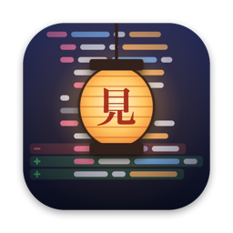
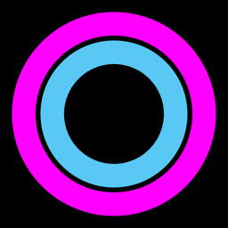
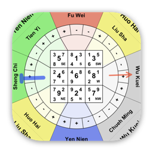

Apps
-
pingpoint.io
PingPoint iPhone · iPad
Visualize network latency on a live map as you move. Spot dead zones and strong signal at a glance.
-

Learn moreMimamori Mac · Free and open source
A lightweight Mac app that keeps watch over git worktrees while coding agents work.
-

Learn moreSesh Time iPhone
A calm, minimalist interval timer for meditation and any practice you keep.
-
Learn more
MetaSort Mac
Organize your photos, videos and audio into clean, date-based folders, right on your Mac.
-

24mountains.comTwenty-Four Mountains Mac · iPhone soon
Classical Feng Shui software for the Mac. The first of its kind, streamlining the charting practitioners rely on.
Open source
More experiments and tools live on GitHub.